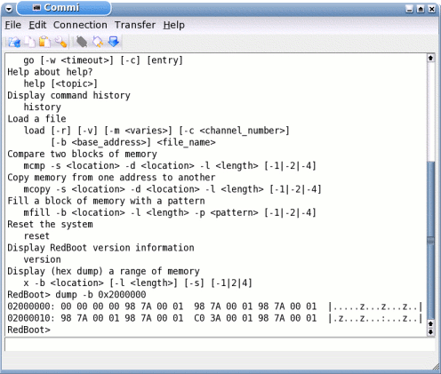
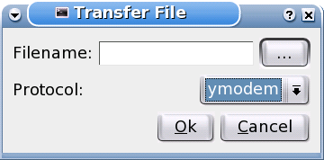
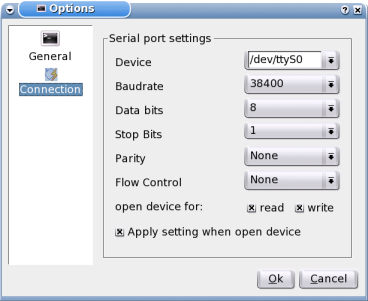

The Commi Handbook
Content
Commi is a line orientated serial terminal like minicom.
The main window looks like

Using it is very simple, you must first setup your serial port under the Edit->Options.
Then open the port Connection->Open (F3). Commi will try to open the port you setuped. If it fails check the permissions of the choosen device (can you read and/or write it).
When it is setuped correctly you can type your text in the line at the bottom.
This line has a history function which is used by the up and down arrow.
If you want to transfer a file go to Transfer->Send File (Ctrl+S). A little window will open...

Choose your file you want to upload trought the '...'-Button and your prefered transfer-protocol.
Click Ok and your file will be send.
If you choose x-,y- or zmodem as your protocol you must have installed the sz-tools.
To perform a batchfile simply do File->Open batchfile... (Ctrl+O).
How to write your own batchfiles can you read here : Syntax of the batchfiles
Will do this later :( 